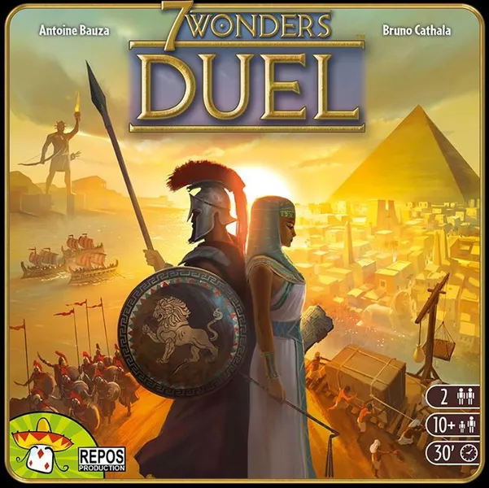
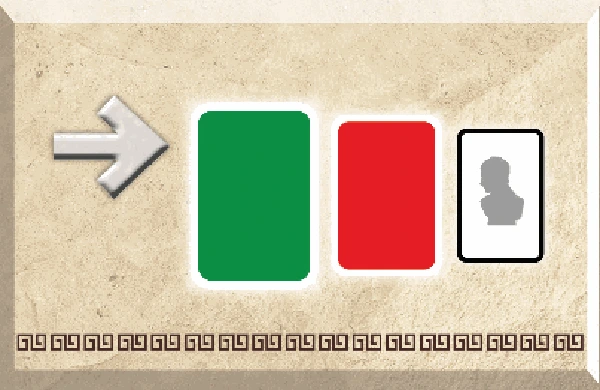

7 Wonders Duel ALPHA
Automa Duelist • Modo Solo Oficial
Escolha o seu Oponente (Líder)
Preparação na Mesa
Estrutura de Cartas da Era I
Monte a pirâmide da Era I com as 20 cartas (alternando fileiras viradas para cima e para baixo) conforme as regras padrão.
Tabuleiro & Marcadores
- Coloque o peão de Conflito Militar no centro (posição 0).
- Coloque os 4 marcadores de Penalidade Militar nos seus espaços.
- Embaralhe os 10 marcadores de Progresso e coloque 5 virados para cima no tabuleiro.
- Você começa com 7 moedas. O Líder começa com 0 moedas.
Escolha de Maravilhas (Draft)
Embaralhe as 12 cartas de Maravilha. Compre 3:
- Você escolhe 2 para você.
- A 3ª vai para o Líder.
Repita o processo mais uma vez (Compre 3 → Pegue 2 → 1 para o Líder). No total, você terá 4 e o Líder terá 2.
Importante: As 2 Maravilhas do Líder já são tratadas como construídas imediatamente! Aplique todos os seus efeitos no setup (moedas, avanço militar, compra de tokens de progresso descartados).
Baralho de Decisão
O aplicativo já embaralha digitalmente as 12 Cartas de Decisão oficiais. Você não precisa recortar as cartas físicas.
Líder
Progresso • Cor
Baralho esgotado! Reembaralhado automaticamente.

TURNO EXTRA! O Líder joga outra carta em seguida.
Ordem de Prioridade:
Militar
0
Neutro
PVs do Líder
0
Cartas Azuis / Bônus
Era Atual
I
Símbolos Científicos do Líder
0 / 7
Histórico de Ações